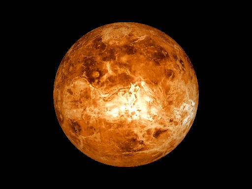
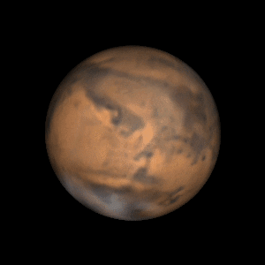
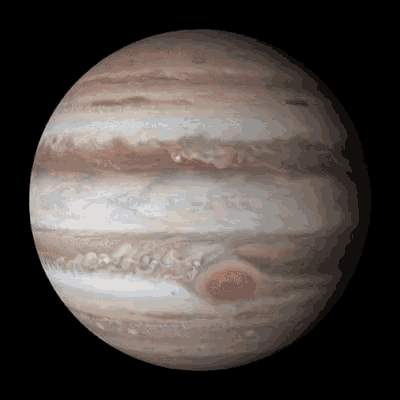
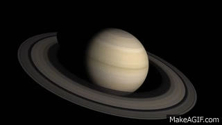

The smallest planet and closest to the Sun. Mercury is rocky, has no atmosphere to trap heat, and experiences extreme temperature fluctuations between day and night.

The hottest planet due to its thick, toxic atmosphere of carbon dioxide and sulfuric acid clouds. Often called Earth's twin because of its similar size, but its surface is uninhabitable.

The only planet known to support life. It has a balanced atmosphere, abundant water, and a protective magnetic field.

Known as the "Red Planet" due to its iron oxide-rich soil. It has the largest volcano in the solar system (Olympus Mons) and signs of ancient water flow.

The largest planet, famous for its Great Red Spot, a massive storm. It has dozens of moons, including Europa, which might harbor an ocean beneath its icy crust.

Known for its striking ring system made of ice and rock particles. It’s a gas giant with many moons, including Titan, which has a thick atmosphere.